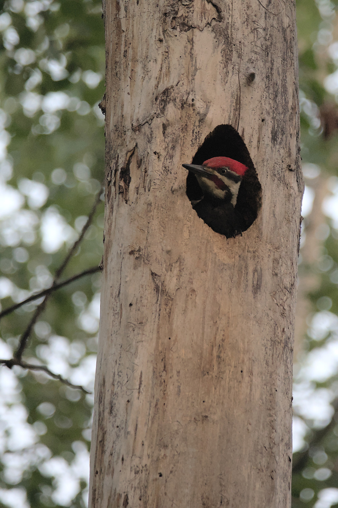
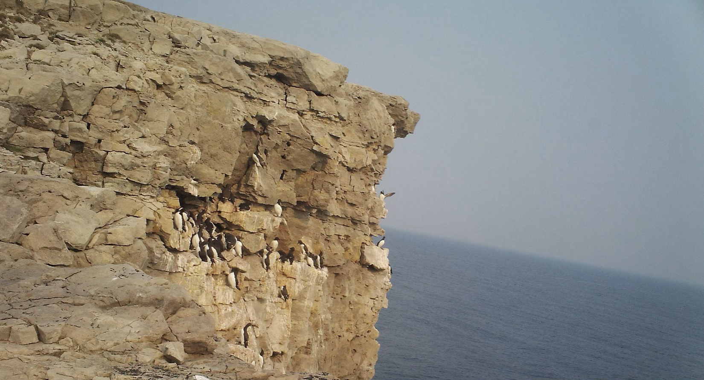

| Species of migratory bird | Waiting period (months) |
|---|---|
| Pigeon Guillemot | 12 |
| Rhinoceros Auklet | 12 |
| Atlantic Puffin | 12 |
| Tufted Puffin | 12 |
| Horned Puffin | 12 |
| Manx Shearwater | 12 |
| Northern Gannet | 12 |
| Fork-tailed Storm Petrel | 12 |
| Leach’s Storm Petrel | 12 |
| Cassin`s Auklet | 12 |
| Ancient Murrelet | 12 |
| Great Egret | 24 |
| Great Blue Heron | 24 |
| Cattle Egret | 24 |
| Green Heron | 24 |
| Snowy Egret | 24 |
| Black-crowned Night Heron | 24 |
| Pileated Woodpecker | 36 |
Adaptive Image Monitoring (AIM) Program
The Adaptive Image Monitoring (AIM) program is a collaborative initiative focused on enhancing biodiversity data collection through the strategic placement of remote camera traps in diverse scenarios. By employing science-based decision-making and standardized protocols, AIM optimizes remote camera placement to increase habitat and species coverage, thereby providing deeper and more accurate insights into species behaviour, population dynamics, and ecology. Integrated with WildTrax’s remote camera sensor, AIM efficiently channels this data into streamlined workflows, facilitating consistent and reliable long-term species monitoring.
Concepts
Unconventional camera placements
Remote camera traps are a widely used tool for monitoring animals with deployment strategies designed to optimize detection rates principally for medium to large mammals. These cameras are typically positioned at key locations, such as along wildlife trails, near water sources, at feeding stations, or in random designs to capture the activity of target species. By strategically placing remote camera traps, researchers can calculate detection rates across a range of taxa, maximizing the efficiency and output of these devices. Beyond mammals, remote camera traps can also be effective in capturing other fauna, including birds, reptiles, or small mammals, depending on the setup and environment. The integration of remote camera trap data with other environmental sensors (e.g., acoustic sensors) also allows for a more comprehensive view of ecosystem dynamics, providing valuable insights into species behavior, population trends, and habitat use.
Incorporating remote camera trap data from various uses and sources into platforms like WildTrax presents significant potential. By integrating remote camera trap data alongside acoustic and other environmental sensor data, WildTrax can serve as a centralized repository for diverse types of wildlife monitoring data. This harmonization allows researchers to analyze cross-sensor data in a unified format, leading to richer ecological insights and improving the potential for artificial intelligence-driven analytics. With the right data management strategies, WildTrax can support the scaling of remote camera trap studies, improving accessibility for various stakeholders and enhancing species monitoring efforts at larger ecological scales.
Distance-based detection

Estimating how far an animal is from a camera is important for understanding animal density and distribution. Distance-based detection allows researchers to calculate the effective detection range of the camera, which can then be used to estimate animal densities within the surveyed area. Factors such as vegetation, terrain, and species-specific behaviour can influence detection distances, making it important to calibrate camera trap systems for precise measurements. Distance-based data not only improves species counts but can also enable spatial modeling of animal movements and habitat preferences. By combining this information with camera trap data in WildTrax, researchers can map species distributions, analyze animal densities over large areas, and refine conservation strategies based on real-time, location-specific data. This approach increases the accuracy of density estimates and enhances our understanding of how species use their environment across different landscapes and ecosystems.
Point-based image tagging
Point-based image tagging provides a more efficient way to label small or distant objects within images, compared to bounding boxes. In situations where animals or objects occupy only a small portion of the image, tagging the exact location with a point can increase precision and reduce ambiguity. This method is particularly useful for identifying smaller species, distinguishing between multiple animals in the same frame, or tagging specific features, such as nests or food items, within cluttered environments. Implementing point-based tagging in WildTrax allows users to label data more accurately, improving the quality of machine learning training sets and enabling artificial intelligence models to detect and classify objects with greater accuracy. This technique can streamline data processing, reducing manual tagging efforts while maintaining high-quality datasets for ecological studies.
Event tagging
Reporting on behaviours occurring in an image is vital for providing context to the animal’s life history. Event tagging helps researchers and automated systems capture these behaviors, such as foraging, resting, or interacting with other animals. Tagging these events can offer insights into species’ activity patterns, behavioral ecology, and interactions with their environment. For example, identifying the presence of offspring or predation behavior can add depth to species monitoring efforts, enabling more informed conservation decisions. By incorporating event tags into platforms like WildTrax, researchers can systematically categorize behaviors, improving data richness and making it easier to analyze trends over time. This allows for more granular data interpretation and provides a clearer picture of species’ activity patterns across various ecosystems.
Artificial Intelligence
Artificial intelligence (AI) can significantly enhance the speed and accuracy of data processing. By automating tasks such as species identification, behavior tagging, and event detection, AI reduces the manual effort required for image and video analysis. Machine learning models can be trained to recognize species-specific traits and behaviors, helping researchers analyze large datasets more efficiently. This also enables the discovery of patterns that might be difficult for humans to detect, leading to more insightful ecological analyses. Enhancing the current AI-driven algorithms in WildTrax, i.e. Megadetector can accelerate data processing workflows, improves accuracy, and opens new avenues for large-scale wildlife monitoring, making it easier to manage and interpret data from various sensors.
Proposed WildTrax Enhancements
With this we aim to achieve the goals of having adaptive camera usage implemented by several key enhancements to WildTrax:
- Target additions (e.g., nest cavities): New features allow users to tag specific targets such as nest cavities, adding detail to species observations.
- Target metadata (e.g., cavity size, cavity depth): These fields capture critical attributes of target structures, providing deeper insights into habitat usage.
- Species behaviours (e.g., entering/exiting cavity, feeding young): The ability to tag specific behaviors adds context to species’ life history and reproductive strategies.
- Sensor to target metadata (e.g., distance, angle): This enables more precise data collection by recording how sensor placement relates to the target, improving the accuracy of behavioural data.
- Field of view metadata (e.g., zoomed in): Adding metadata on camera zoom levels allows researchers to standardize observations across different levels of magnification.
- Visit metadata additions (e.g., survey polygons): Survey polygons offer spatial context, helping to map the exact area covered during a visit.
- Explore efficiencies in the usage of aritifical intelligence for event, point and group-based tagging
- Analytics: Expanded analytics capabilities allow users to generate detailed reports on species detections, behavior, and environmental conditions across time and space.
Business Cases
Nest monitoring
The Migratory Birds Regulations, 2022 (MBR 2022) represent a significant shift in the protection of migratory bird nests across Canada. Previously, the Migratory Birds Regulations (MBR) provided year-round protection for the nests of all 395 migratory bird species, regardless of whether they were active. However, under MBR 2022, protection has been narrowed to nests that contain a live bird or viable egg, aligning conservation efforts with the active use of the nest. This change emphasizes that the conservation value of most nests is highest during periods of occupancy, offering a more targeted approach. For 18 species (see @ref(fig:nests)) listed on Schedule 1, nests receive year-round protection until they are deemed abandoned. This regulatory adjustment enhances both conservation outcomes and the ability for stakeholders to predict and manage their compliance while working on landscapes that may impact bird nests.
MBR 2022 requires stakeholders to monitor nests for up to three years in some cases, placing new legal obligations on regulators, developers, and land managers. This creates a substantial demand for resources to collect, interpret, and report on nest monitoring data in a standardized, compliant manner. WildTrax is uniquely positioned to meet this need, providing tools to streamline the collection, analysis, and reporting of nest data. As a result, we can anticipate a significant increase in both current users and new users turning to WildTrax to ensure regulatory compliance and to create efficient pipelines for species protection and remediation.
Pileated Woodpecker

The MBR 2022 protects Pileated Woodpecker nests year-round, requiring a 36-month wait before removing unoccupied cavities. Recent projects (Casey et al. 2024 have shown that using predictive mapping and remote sensing tools to help locate nests and optimize monitoring, with regular updates based on new data, will help to streamline the workflow behind.
Owls
Colony and group monitoring

The study of groups and colonies of species has historically presented significant challenges for researchers aiming to elucidate biological metrics. The adoption of remote camera traps has transformed colony monitoring, yielding more accessible and reliable data compared to conventional methodologies such as aerial surveys and boat-based counts. The AIM program recognizes the potential synergies afforded by remote cameras in facilitating the comprehensive data lifecycle, from initial collection through to analysis. In light of recent advancements in individual identification techniques, the AIM program aims to integrate acoustic recording units (ARUs) and camera data collection, thereby enhancing insights into these species’ ecology and behaviour.
Seabirds
Seabird colony monitoring presents significant challenges due to the remoteness of many colonies and the logistical difficulties of conducting more than one survey per season. Traditional monitoring methods often provide only a snapshot of colony activity, limiting our understanding of critical factors such as arrival times, breeding success, and seasonal behaviors. Deploying cameras at seabird colonies offers a transformative solution, allowing for continuous time-lapse photography and other forms of image capture, which dramatically increase the amount of data available. This approach provides a more comprehensive view of colony dynamics, including daily and seasonal patterns that would otherwise go unnoticed. Enhancements to WildTrax would create a seamless platform for users to efficiently manage seabird colony monitoring via camera traps. By integrating camera data with analytical tools and automating workflows, WildTrax can streamline the process of collecting, processing, and interpreting the massive volumes of image data generated from remote sites. This capability would not only improve the efficiency of monitoring efforts but also allow for more frequent and detailed observations, contributing to a deeper understanding of seabird behavior and population trends.
There is a growing need for data management solutions to support these efforts, particularly from Environment and Climate Change Canada (ECCC). ECCC is tasked with overseeing the protection of migratory species, including seabirds, and faces increasing pressure to improve monitoring capabilities under evolving regulations. The ability to collect, store, and analyze large datasets from remote colonies is essential for compliance, conservation planning, and reporting. WildTrax can fulfill this need by offering an integrated system that helps stakeholders manage seabird monitoring data in a standardized, accessible way, ensuring that regulatory and conservation objectives are met efficiently and effectively.
Feral Horses
Feral horse abundance / density
Bats
Can we take pictures of bats exiting colonies?
Swallows
Can we take pictures of swallows at roost / colonies? Under bridges? Wide-angle view to count flocks?
Ducks
Can we compare camera vs ARUs for duck counts when the camera is beside a lake?